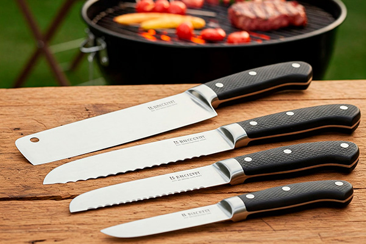

Review: As Melhores Facas do Chef para Churrasco

Todo bom churrasqueiro sabe: uma faca de qualidade não é luxo, é **necessidade**. Desde preparar os cortes antes de irem para a grelha até fatiar a carne no ponto perfeito para servir, a faca certa faz toda a diferença na precisão, segurança e apresentação.
Mas qual faca escolher? A "Faca do Chef" é um termo genérico, e para churrasco, algumas características são mais importantes. Vamos analisar os tipos essenciais e o que buscar em uma boa faca para suas aventuras na grelha.
Tipos de Facas Essenciais para o Churrasqueiro
1. Faca do Chef (ou Faca de Cozinha Principal)
É a faca mais versátil. Para churrasco, procure uma com lâmina entre 8 a 10 polegadas (20 a 25 cm). Ela serve para:
- Limpar peças de carne (remover excesso de gordura ou membranas).
- Picar temperos, alho, cebola.
- Fatiar peças maiores de carne já assadas.
O que buscar: Bom equilíbrio, cabo confortável e seguro (mesmo com mãos molhadas ou engorduradas), lâmina de aço de boa qualidade (inox ou carbono) que mantenha o fio.
2. Faca de Desossa (Boning Knife)
Possui lâmina mais fina, estreita e geralmente curva, ideal para:
- Separar a carne dos ossos (desossar frango, costela).
- Remover membranas e gorduras de locais de difícil acesso.
- Fazer cortes precisos em peças mais delicadas.
O que buscar: Lâmina flexível (mas não demais), ponta aguda, bom controle e cabo ergonômico.
3. Faca para Fatiar (Slicing/Carving Knife)
Caracterizada por uma lâmina longa e estreita, às vezes com alvéolos (pequenas depressões) para reduzir o atrito. Perfeita para:
- Fatiar grandes peças assadas (picanha inteira, brisket, peru) em fatias finas e uniformes com um único movimento.
- Preservar a suculência ao cortar, pois exige menos "serragem".
O que buscar: Lâmina longa (10 a 14 polegadas), relativamente fina, bom fio.
4. Cutelo (Cleaver) - Opcional
Uma ferramenta pesada com lâmina larga e robusta. Não é essencial para todo churrasqueiro, mas útil para:
- Cortar ossos (costelas, juntas de frango).
- Picar grandes quantidades de carne ou vegetais rapidamente (exige técnica).
O que buscar: Peso adequado para sua força, construção robusta (full tang preferível), aço resistente.
O Que Define uma Boa Faca de Churrasco?
- Material da Lâmina:**
- Aço Inoxidável:** Mais comum, resistente à corrosão, fácil de manter. A qualidade varia muito; procure por aços de boa reputação (ex: Alemão 1.4116, Sueco Sandvik, Japonês VG-10).
- Aço Carbono:** Mantém o fio por mais tempo e é mais fácil de afiar, mas exige mais cuidado para evitar ferrugem (precisa ser limpa e seca imediatamente após o uso, e oleada ocasionalmente). Preferida por muitos entusiastas pelo desempenho de corte.
- Fio da Lâmina:** Deve vir bem afiada de fábrica e, mais importante, ser capaz de *manter* o fio por um tempo razoável e ser relativamente fácil de reafiar.
- Construção (Tang):**
- Full Tang:** A espiga (parte metálica da lâmina que se estende para dentro do cabo) vai até o final do cabo. É a construção mais forte e equilibrada. Altamente recomendada para facas de churrasco.
- Partial Tang:** A espiga não vai até o fim. Menos resistente, mais comum em facas baratas.
- Cabo:** Deve ser confortável, ergonômico e oferecer uma pegada segura, mesmo com as mãos úmidas ou engorduradas. Materiais comuns incluem madeira tratada, polímeros sintéticos (polipropileno, G10, Micarta) e metal.
- Equilíbrio:** Uma faca bem equilibrada cansa menos a mão e oferece maior controle. O ponto de equilíbrio geralmente fica perto de onde o cabo encontra a lâmina (guarda).
- Manutenção:** Toda faca precisa ser afiada regularmente. Invista em uma boa chaira (para alinhar o fio no dia a dia) e uma pedra de amolar (para refazer o fio quando necessário). Lave as facas à mão, nunca na máquina de lavar louça, e seque-as imediatamente.
Conclusão
Não precisa comprar o kit mais caro do mercado, mas investir em **pelo menos uma boa Faca do Chef (8-10 polegadas, full tang)** é o ponto de partida essencial. A partir daí, avalie suas necessidades: se desossa frango com frequência, uma faca de desossa será útil. Se costuma assar peças grandes, uma faca de fatiar fará diferença na apresentação.
Priorize a qualidade do aço, a construção full tang e um cabo confortável e seguro. Uma boa faca, bem cuidada, é uma companheira para muitos e muitos churrascos!
Quer Afiar suas Habilidades (e Facas)?
Inscreva-se para receber dicas de afiação, reviews de marcas e modelos, e como escolher os melhores acessórios de corte!